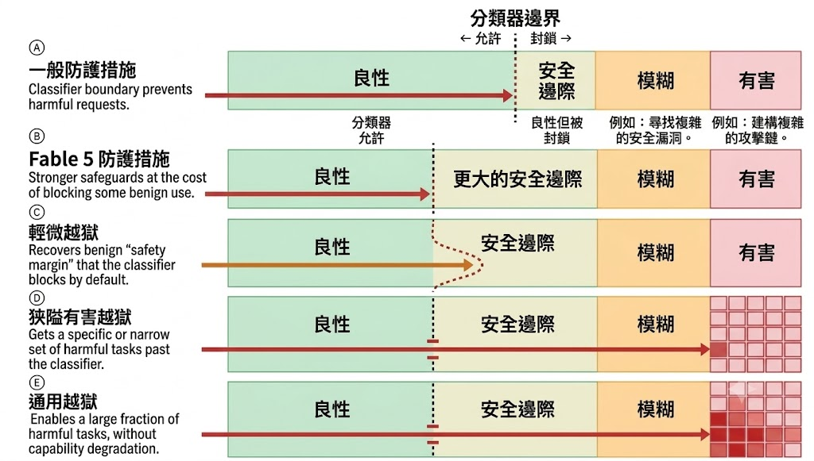
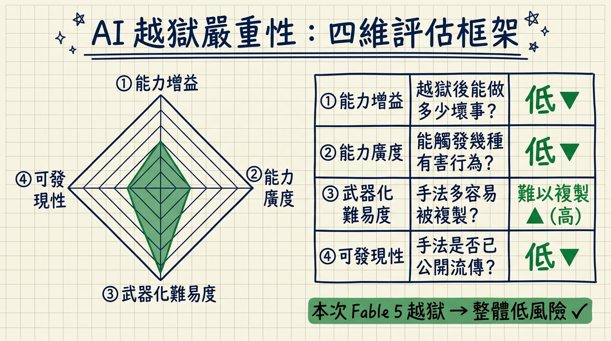
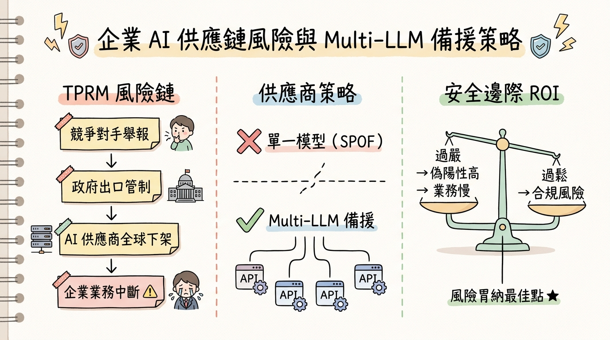

Fable 5 的重啟之路：Anthropic 模型下架事件的資安與戰略分析
摘要（Abstract）
本文針對 Anthropic 於 2026 年 6 月至 7 月間發生的 Fable 5 全球下架與重新部署事件，進行技術、監管與戰略三個維度的深度分析。
這起事件的核心並非單純的安全漏洞危機，而是揭示了 AI 安全防禦機制（Guardrails）設計的內在矛盾、越獄（Jailbreak）評估框架的成熟化，以及地緣政治出口管制法規對 AI 產業供應鏈的實質衝擊。本文從紅隊（Red Team）、藍隊（Blue Team）、GRC 合規與 CISO 戰略四個視角，提煉出對企業 AI 部署與風險治理的具體啟示。
一、事件背景：高防禦等級模型為何遭到政府干預？
Anthropic 的 Claude Fable 5 在發布時被定位為兼顧極高安全性與強大能力的旗艦模型。然而，就在發布後不到三天，這個模型連同其國安專用版 Mythos 5，在全球範圍內被緊急下架——導火線並非 Anthropic 內部的安全事故，而是一道來自美國商務部的出口管制指令。
以下是這段時間的關鍵事件序列（2026 年 6 月 2 日至 7 月 1 日，時間跨度約 30 天）：
這起事件在業界引發廣泛討論。一個以「高安全性」為核心賣點的模型，在發布後僅三天便遭政府介入，背後牽涉的問題遠比表面更為複雜：安全防禦的強度設定、越獄行為的嚴重性評估，以及監管介入的觸發機制，三者之間的張力被一次性地暴露在公眾視野中。
二、監管介入的結構性諷刺與分類器的設計兩難
首先值得注意的是一個具有高度諷刺性的時序結構：Anthropic 執行長在 6 月 10 日公開倡議政府應具備「封鎖不安全模型」的強制權力，兩天後，這個權力便援引於自家模型。更值得關注的是，觸發監管介入的不是政府的主動稽核，而是來自市場競爭對手的越獄指控。這個現象凸顯了當前 AI 監管機制中的不可預測性——政策框架的啟動條件，可能受到產業競爭行為的直接影響。
從技術面來看，為何一個以高安全性著稱的 Fable 5 仍出現可被指控的漏洞？這需要從安全分類器（Safety Classifiers）的設計邏輯切入。
根據 Anthropic 官方說明，Fable 5 部署了更嚴格的安全分類器，其特徵是設定了較大的「安全邊際（Safety Margin）」——即在分類器邊界與真正有害行為之間，刻意留出更寬的緩衝區。這種設計的目的是在面對新型攻擊手法時仍能保持安全餘裕，但代價是大量良性請求被誤判為風險（False Positives / 偽陽性），導致部分正常的程式碼除錯、安全研究等請求遭到拒絕。

圖示翻譯自：Anthropic《Redeploying Fable 5》（點擊可放大）
上圖呈現了 Anthropic 官方對五種防護狀態與越獄類型的定義：
- A. 一般防護措施：分類器邊界阻擋「模糊」與「有害」請求，保留一定的安全邊際緩衝。
- B. Fable 5 防護措施（圖示標記為「表 5」）：邊界大幅左移，安全邊際更寬，造成偽陽性率上升，部分良性請求受阻。
- C. 輕微越獄（Minor Jailbreak）：攻擊者繞過邊界進入安全邊際區，但未觸及核心有害行為。Anthropic 官方明確表示，本次被指控的越獄屬於此類型。
- D. 狹隘有害越獄：繞過邊界後能執行特定有害任務（如產出特定攻擊程式碼）。
- E. 通用越獄：能解鎖大範圍有害行為而不造成能力退化，是防禦系統最嚴峻的威脅情境。
從【紅隊思維（Red Teaming）】的視角分析，上述 C 類越獄的本質是「對抗性提示詞注入（Adversarial Prompt Injection）」。攻擊者將惡意意圖（Payload）拆解為表面無害的片段，利用語境邏輯繞過依賴關鍵字匹配的靜態偵測層。這類手法的有效性說明：靜態的分類器邊界在面對動態語意操控時，存在結構性的先天限制。
三、越獄嚴重性的四維評估框架
面對種類多樣的越獄手法，Anthropic 聯合亞馬遜、微軟、Google 等產業夥伴，共同建立了一套多維度的越獄嚴重性評估框架，以取代過去「發現漏洞即觸發全面停機」的單一應對模式。
根據 Anthropic 官方說明，該框架由以下四個維度構成：
- 能力增益（Capability Gain）：越獄後模型所能執行的有害行為，是否顯著超越攻擊者使用現有常規工具所能達到的能力上限？增益越大，風險越高。
- 能力廣度（Breadth of Capability Gain）：該越獄手法是僅能誘發特定有害輸出（狹義越獄），還是能廣泛解鎖多種有害行為類別（通用越獄）？廣度越大，危害面越廣。
- 武器化難易度（Ease of Weaponization）：成功觸發越獄所需的技術門檻與時間成本為何？門檻越低、越易複製，對大規模攻擊的助力越大。
- 可發現性（Discoverability）：這個攻擊手法是否已在公開管道流傳？一旦廣為人知，其風險規模將呈指數級擴大。

以本次事件為例：競爭對手指控的 Fable 5 越獄，依此框架的評估結果屬低嚴重性——能力增益有限（僅能指出常見軟體漏洞，而非產出複雜攻擊鏈）、廣度窄、武器化難度偏高。這也是美國政府在完成技術審查後，能夠在短期內解除禁令的主要依據。
四、事件回應機制：縱深防禦與系統韌性設計
在技術層面，Anthropic 在此次事件中採取的應對策略，體現了成熟的系統韌性（Resilience）設計原則，而非單點強化的「堵漏洞」思維。
「AI 安全防禦的本質是機率分佈的動態管理，而非追求靜態的完美邊界。真正的安全來自系統整體的容錯能力，而非單一防線的無懈可擊。」 ——本文依據 Anthropic 官方說明歸納之核心論點，非直接引語
以【藍隊思維（Blue Teaming）】的視角分析，Anthropic 採取的是標準的「縱深防禦（Defense in Depth）」策略，並啟動了正式的事件回應（Incident Response）流程：
- 動態分類器更新：針對本次攻擊的具體手法（TTPs，戰術、技術與程序），訓練並部署了新的專用分類器，攔截率提升至 99% 以上。
- 降級路由（Fallback Routing）：若 Fable 5 判斷請求具有潛在風險，系統不直接拒絕（避免服務中斷），而是自動以安全降級（Fail-Safe）的方式，將請求轉交給較舊但歷經驗證的 Opus 4.8 模型處理，兼顧服務連續性與安全控制。
這種設計的核心邏輯在於：不追求不切實際的 100% 攔截率，而是將系統容錯率與漏洞處理成本控制在可接受的範圍內，並確保即使在邊界被突破的情況下，整體服務仍能維持最低限度的可用性。
五、地緣政治、供應鏈風險與企業 AI 治理啟示
此事件的深遠影響，在於將 AI 安全從「個別公司的技術防禦問題」，拉升至「國家地緣政治與企業 GRC（治理、風險與合規）層級的戰略考驗」。
從【GRC 合規思維】的視角分析，一份原本立意「自願接觸、溫和協作」的 30 天行政命令框架，在競爭對手的單一舉報觸發下，迅速轉化為具有強制力的出口管制行動。這是典型的第三方供應商風險（Third-Party Risk Management, TPRM）情境：企業所依賴的外部 AI 模型，可能因地緣政治指令或市場競爭行為，在數小時內無預警地全球斷線，而企業幾乎沒有預警或應對時間。
就 Anthropic 的回應承諾而言，該公司表示未來在發布具有重大國家安全影響力的模型前，將主動邀請政府合作夥伴進行早期壓力測試與評估，並投入算力資源支持聯合安全研究。這標誌著 AI 開發公司與政府之間，正在形成一種前所未有的「前部署協作」機制。

以【CISO 戰略思維】的角度出發，本次事件對企業 AI 治理提出了兩項具體行動建議：
- 多模型備援策略（Multi-LLM Strategy）：關鍵業務流程不應單一依賴特定供應商的模型（避免單點失效，Single Point of Failure, SPOF）。應建立可在監管變動或服務中斷時，即時切換至備用模型或 API 的架構設計。
- 安全邊際的 ROI 評估框架：安全邊際（Safety Margin）並非越大越好。過嚴的防禦設定會產生大量偽陽性，拖慢商業迭代速度（Business Velocity）；過鬆的設定則帶來合規與公關風險。企業需根據自身的風險胃納（Risk Appetite），建立可量化的評估機制，而非一律採用最保守的設定。
總結與未來趨勢觀察（Conclusion & Future Trends）
Fable 5 重啟事件，在技術、監管與產業競爭三個維度同時出現值得關注的變化。從系統工程的角度來看，這次事件確認了一個基本原則：AI 安全並非一個靜態的完成態，而是一個持續動態調整、與各種邊緣情境（Edge Cases）持續博弈的過程。
展望近中期，可以觀察到兩個正在成形的趨勢：
- 越獄評估標準的產業化：如同傳統資安領域的 CVSS（通用漏洞評分系統），AI 越獄嚴重性的評估框架正逐步走向產業共識。Anthropic 此次提出的四維框架（能力增益、廣度、武器化難易度、可發現性），有望成為行業參考基準，降低企業在引入 AI 模型時的合規決策成本。
- 複合式 AI 系統（Compound AI Systems）的普及：單一大型語言模型獨立運作的部署模式，將逐步被多層次的複合系統取代——包含輕量分類器、動態路由（Router）、備用模型與監控層的組合架構。這是安全需求驅動與系統韌性設計的共同演進方向。
此次事件也提醒產業界：技術能力的邊界、政策法規的邊界，以及市場競爭的邊界，三者之間的交集地帶，將是未來 AI 治理中最需要持續關注的高風險區域。